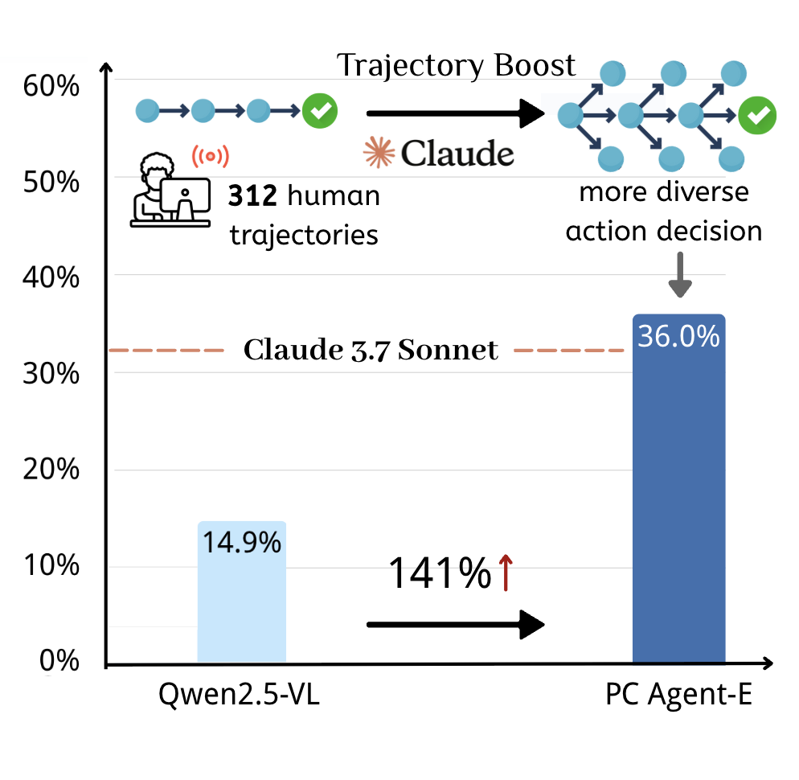
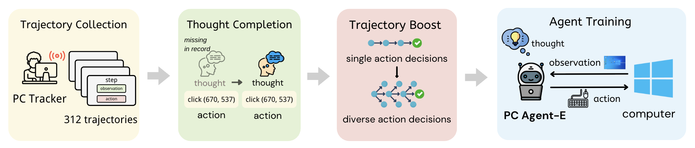
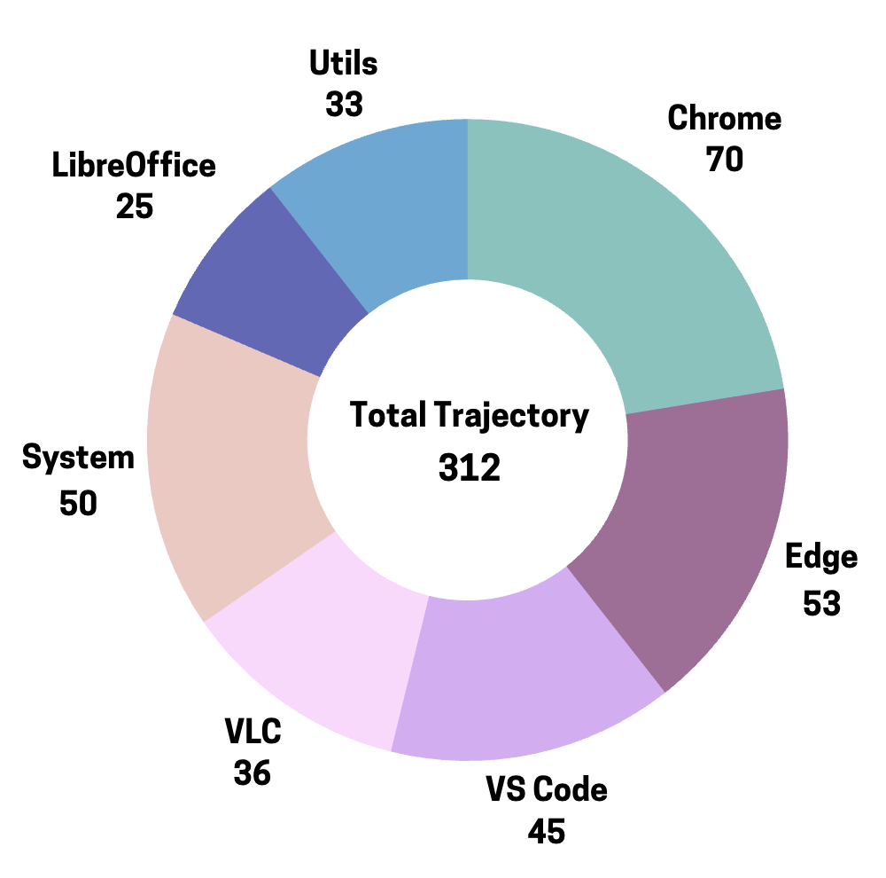
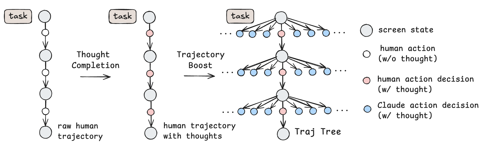
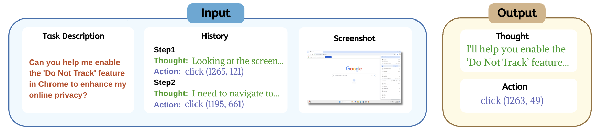
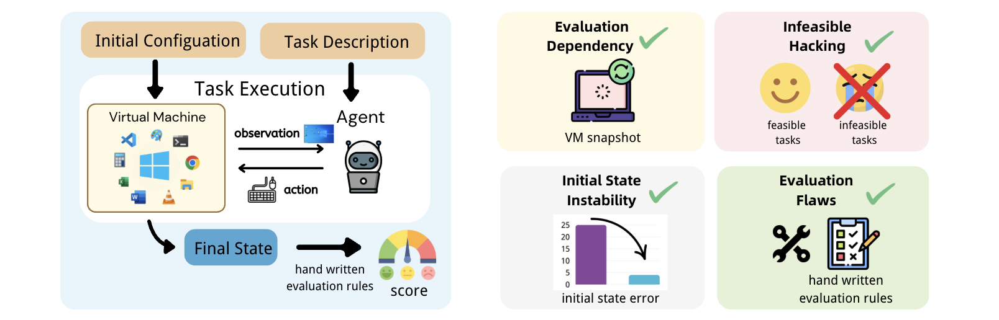
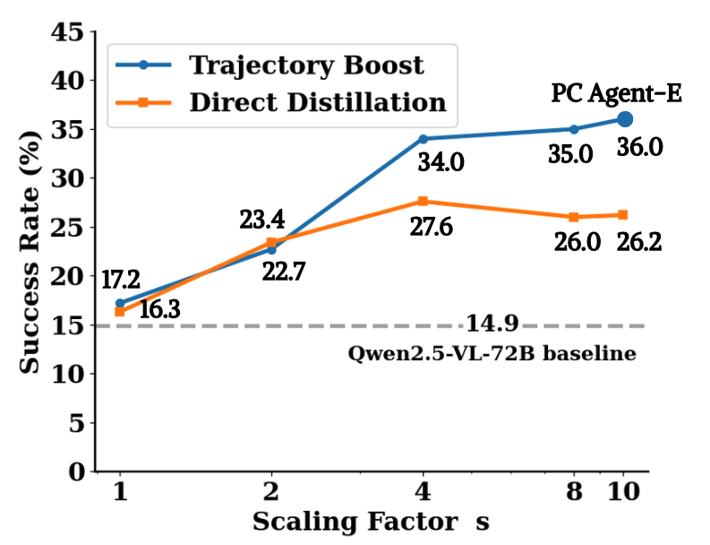
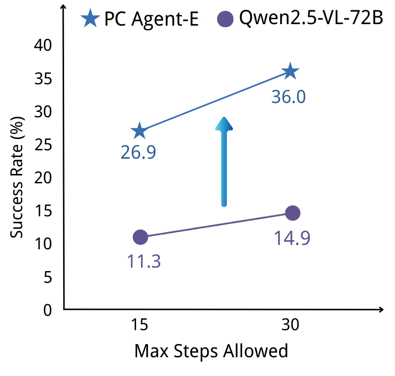

本文提出了一种名为 PC Agent-E 的高效智能体训练框架，旨在解决开发类人计算机使用智能体过程中高质量轨迹数据极端稀缺的瓶颈问题。研究团队仅使用 312 条 人类标注的计算机使用轨迹作为起点，随后利用 Claude 3.7 Sonnet 模型合成了多样化的备选动作决策来进一步增强数据。基于这些增强后的轨迹进行训练，PC Agent-E 模型在 WindowsAgentArena-V2 基准测试上取得了显著的 141% 相对提升，并以 10% 的相对优势超越了强大的 Claude 3.7 Sonnet 模型。通过将鲁棒的人类计算机使用技能与自动化 AI 数据合成能力相结合，本方法不仅在仅使用人类轨迹训练的基础上带来了实质性改进，还显著超越了直接蒸馏 Claude 3.7 Sonnet 的方法。代码、数据和模型已开源发布于 https://github.com/GAIR-NLP/PC-Agent-E。
| 项目 | 内容 |
|---|---|
| 论文 ID | 2505.13909 |
| 标题 | Efficient Agent Training for Computer Use |
| 作者 | Yanheng He, Jiahe Jin, Pengfei Liu |
| 单位 | 上海交通大学 (Shanghai Jiao Tong University), SII, GAIR |
| 会议/期刊 | arXiv 预印本 |
| 原文保存位置 | ~/.openclaw/workspace/paperssource/ |
| 报告生成日期 | 2026-03-09 |
开发能够像人类一样操作计算机的自主智能体长期以来一直是人工智能领域的一个重要里程碑。这类计算机使用智能体由视觉语言模型（VLM）驱动，通过感知屏幕截图来直接与图形用户界面（GUI）进行交互——点击按钮、导航菜单、输入文本。这使得它们能够自动化完成广泛的数字任务，从常规文书工作和在线购物到复杂的内容创作，有望显著减少手动人力工作量。
然而，当前模型在性能上仍与人类存在显著差距。这种能力差距在开源社区中更为明显，目前没有任何解决方案能够与 Claude 3.7 Sonnet 等领先的商业系统相竞争。将这些先进的计算机使用能力植入开源模型仍然是一个未解决的问题。导致这些不足的一个关键因素是高质量计算机使用轨迹数据的极端稀缺。
本工作探索了计算机使用智能体的高效训练方法，使开源模型能够仅凭少量人类标注就超越商业模型的性能。受到近期研究发现（利用 Deepseek-R1 等先进推理模型合成高质量数据可以有效提升 LLM 推理能力）的启发，我们将类似思路扩展到计算机使用智能体领域。
作者提出了 PC Agent-E，这是一个将人类专业知识与 AI 自动化相结合的高效智能体训练框架。从少量真实世界的人类计算机使用轨迹开始，利用前沿智能体模型来多样化动作决策，从而产生更丰富的监督信号。基于这些增强后的轨迹进行训练，我们的智能体展示了强大的计算机使用能力，表现出卓越的数据效率。
具体流程包括：

图 1：PC Agent-E 仅用 312 条增强轨迹就在 Windows 计算机使用任务中实现了开源最优性能。
:::
随着 VLM 的发展，计算机使用智能体与计算机的交互方式逐渐从依赖文本表示（如无障碍树）转变为直接使用屏幕截图。现有计算机使用智能体可以根据其设计中融入多少人类先验知识进行分类：一类是模块化智能体工作流，定义了专门的模块并提示多智能体协作；另一类是原生智能体模型，依赖单个模型根据其历史和当前状态逐步执行动作。
虽然模块化智能体工作流可以降低任务复杂性，但其对人类先验的严重依赖阻碍了在新领域的适应性和端到端优化。随着模型能力的不断增强，原生智能体模型已成为主导范式。这种方法提供了灵活性、可泛化性，并通过监督微调（SFT）或强化学习（RL）实现可持续的性能提升。本工作通过 SFT 探索原生智能体模型的高效训练方法。
随着大语言模型变得越来越强大，使用它们来合成数据已成为一种常见做法。蒸馏方法利用最先进（SOTA）模型为较弱的模型生成大规模训练数据。另一方面，自改进方法使模型能够引导和完善其自身的训练数据。
在计算机使用智能体领域，数据合成大致可以分为三个方面：（1）构建基础 GUI 理解的大规模数据集，如屏幕截图描述或问答任务；（2）单步视觉定位，从 GUI 的特定位置合成鼠标点击任务；（3）多步轨迹，近期研究探索利用网络教程指导轨迹生成，或从智能体自身的探索记录中反向合成任务。本工作与先前工作的不同之处在于基于真实人类演示合成高质量多步轨迹，并强调数据效率。
作者提出了 PC Agent-E，这是一个将人类专业知识与 AI 自动化相结合的高效计算机使用智能体训练框架。该方法通过结合真实的人机交互与多样化的动作决策，生成高质量轨迹数据，同时兼具真实性和多样性的优势。
流程包含四个关键组件：

图 2：框架概览，包含四个关键组件：(1) 轨迹收集，(2) 思考补全，(3) 轨迹增强，(4) 智能体训练。
:::
作者使用 PC Tracker 工具收集人类计算机使用轨迹，该工具可记录给定任务的每一步屏幕状态观察和人类键盘/鼠标动作。记录的动作以统一的动作空间 $\mathcal{A}$ 进行结构化，如表 1 所示。
对于任务生成，作者首先跨多个软件应用程序手动编写少量种子任务，然后使用 LLM 扩大规模。结果任务被分配给人类标注者，他们使用 PC Tracker 自动记录轨迹。完成任务后，标注者可以丢弃不满意的轨迹，或根据实际执行情况修改任务描述，从而确保收集轨迹的正确性和完整性。然后应用一系列基于规则的过滤器来删除表现出错误或其他不良行为的轨迹或步骤。
对这些收集的轨迹进行严格的数据净化程序。每个任务描述都使用 n-gram 重叠和语义相似度指标与主要评估基准中的任务进行比较。具体来说，只保留与任何测试任务在 13-gram 下重叠为 0、在 3-gram 下小于 0.7、语义余弦相似度低于 0.85 的轨迹。
最终获得了 312 条真实世界的人类计算机使用轨迹，分布如图 3 所示。轨迹长度分布如表 2 所示。没有向标注者明确说明轨迹长度要求；分布自然来自于收集的任务和人类演示行为。整个标注过程由两名标注者在一天内完成，平均每条轨迹约 3 分钟。

图 3：312 条任务轨迹在不同应用中的分布。
:::
| 长度范围 | 数量 | 百分比 |
|---|---|---|
| 2--5 | 74 | 23.7% |
| 6--10 | 139 | 44.6% |
| 11--15 | 73 | 23.4% |
| 16--30 | 26 | 8.3% |
表 2：312 条任务轨迹按长度范围（步数）的分布。
| 动作 | 描述 |
|---|---|
| click (x, y) | 点击坐标 (x, y) 处的元素 |
| right click (x, y) | 右键点击坐标 (x, y) 处的元素 |
| double click (x, y) | 双击坐标 (x, y) 处的元素 |
| drag from (x1, y1) to (x2, y2) | 将鼠标从位置 (x1, y1) 拖动到 (x2, y2) |
| scroll (x) | 垂直滚动屏幕，偏移量为 x |
| press key: enter | 按下 Enter 键 |
| hotkey (ctrl, c) | 执行 Ctrl+C 热键 |
| type text: hello | 输入文本 "hello" |
| wait | 等待一段时间 |
| finish | 任务已完成 |
| fail | 任务失败 |
表 1：统一动作空间 $\mathcal{A}$。
作者首先使用迭代方法重建人类动作背后的隐式思维过程。具体来说，对于轨迹中的每个动作，向 Claude 3.7 Sonnet 提供：任务描述、带有先前重建思维过程的历史动作、当前动作以及相应的屏幕截图。基于这些信息，模型生成动作背后的隐式思维过程。如图 4 所示，原始记录的人类轨迹被转换为带有思考的人类轨迹，其中每个步骤都添加了重建的思维过程。
在完成思考补全后，获得了包含显式思维过程的完整人类轨迹。虽然这些轨迹已经是有价值的智能体训练样本，但作者通过一种简单但有效的方法进一步增强它们，称为 轨迹增强（Trajectory Boost），该方法为轨迹的每个步骤合成多样化的备选动作决策。
轨迹增强的动机是计算机使用任务本质上允许多种有效的解决路径。因此，在任何给定步骤中，都存在多种由合理思维过程支持的合理动作，超出人类标注者采用的单一解决方案。为了捕获这种固有多样性，利用前沿计算机使用智能体模型 Claude 3.7 Sonnet 来生成单步备选动作决策。其长期规划能力、高级推理模式和广泛的计算机使用知识使其能够生成高度信息丰富和有价值的思维过程和动作，从而显著增强轨迹数据的丰富性和多样性。
具体来说，作者认识到人类轨迹中的每一步都捕获了计算机的环境快照，提供了人类和智能体做出决策所需的信息。对于步骤 $k$，人类轨迹的观察 $o_k$、思维过程 $t_k$、动作 $a_k$ 和任务描述 $T$，环境快照是 $<T,o_k, h_k>$，其中历史上下文 $h_k = (t_1, a_1, t_2, a_2, \dots, t_{k-1}, a_{t-1})$ 由之前的人类步骤构建。将这个环境快照输入到 PC Agent-E 脚手架中实例化的 Claude 3.7 Sonnet，并从中采样多个单步动作决策 $(t_k', a_k')$。在实践中，并行采样 9 个动作决策。这产生了一个轨迹树（Traj Tree），如图 4 所示，人类轨迹形成主干，增强的动作决策作为叶节点分支出去。这些从 Claude 3.7 Sonnet 采样的动作决策不在真实计算机环境中执行，而是作为后续智能体训练的重要增强数据。

图 4：轨迹增强方法的可视化。(左) PC Tracker 记录的原始人类轨迹。(中) 思考补全后的人类轨迹，其中红色节点表示人类动作决策。(右) 最终的轨迹树，其中蓝色节点表示由 Claude 3.7 Sonnet 合成的多样化增强动作决策。
:::
PC Agent-E 采用故意简化的端到端脚手架，因为作者的主要目标是验证智能体训练方法的有效性，而不是通过复杂的流程设计或复杂的提示工程来优化性能。在推理时，PC Agent-E 以 <屏幕截图、任务描述、历史> 作为输入，并以 ReAct 范式输出 <思维、动作> 决策。动作空间与表 1 中的 $\mathcal{A}$ 相同，每个动作通过 PyAutoGUI 库执行。历史是先前思维和动作的文本日志。为保持训练和推理的简单性，过去的屏幕截图被排除在外，尽管作者认为添加图像历史将有助于提高模型性能。脚手架使用的提示如附录所示。
对于训练，将轨迹树中的每个动作节点转换为单个训练样本。训练样本结构与推理时智能体的脚手架直接对应。对于人类演示和模型合成的动作节点，训练样本中的历史只包括轨迹树主干上之前的人类动作。这与人类和模型在做出相应动作决策时可用的历史上下文一致。最终从 312 条增强轨迹中获得 27K 训练样本，每个样本在推理时遵循一致的结构。

图 5：训练示例，也展示了 PC Agent-E 脚手架的推理过程。
:::
作者最初在 WindowsAgentArena 基准测试上进行评估，该基准测试旨在通过跨多个应用程序的多样化任务在现实的 Windows OS 环境中评估计算机使用能力。它提供虚拟机（VM）状态的自动初始配置和手写评估规则。然而，作者在评估过程中发现了几个局限性。为确保评估可靠性，开发了 WindowsAgentArena-V2，这是一个更新的基准测试，包含 141 个任务，跨越 11 个广泛使用的 Windows 应用程序，全部来自原始 WindowsAgentArena 但进行了如下改进。

图 6：(左) WindowsAgentArena 基准测试概述。(右) 更新后的 WindowsAgentArena-V2 基准测试的主要修改。
:::
解决评估依赖问题。 原始基准测试在任务评估之间缺乏 VM 状态重置，允许先前任务的更改可能影响后续任务。在每个评估之前实现 VM 快照恢复，确保一致的起始状态，防止任务间干扰，并与 i.i.d.（独立同分布）假设保持一致。还安装了一些原始 VM 快照中缺少但正确评估所必需的基本软件。
防止不可行破解。 当前计算机使用基准测试（如 WindowsAgentArena 和 OSWorld）通常包含不可行任务，这些任务由于系统功能弃用或用户生成的幻觉命令等问题本质上无法完成。这些任务的评估指标只是简单地在执行过程中任何时候输出 FAIL 动作就将任务视为成功。然而，作者发现这种评估方法特别容易被破解：一个智能体可以通过始终输出 FAIL 在不可行任务上轻松获得满分，而无需展示任何有意义的计算机使用能力。相比之下，完成一个可行任务通常需要智能体逐步执行动作以真正完成任务目标，难度明显不同。
作者将这种现象称为不可行破解（infeasible hacking），这一漏洞在后续实验中得到了证实，较弱的模型在不可行任务上获得了明显更高的分数。由于智能体在可行和不可行任务上获得相同的分数，它们的共存破坏了基准测试的公平性。此外，鉴于当前计算机使用智能体的能力远未达到最优，作者认为目前更有价值的是专注于提高智能体在可行任务上的性能。因此，在 WindowsAgentArena-V2 中，删除了所有不可行任务以防止不可行破解。
保证 VM 初始状态稳定性。 作者发现任务初始配置后 VM 的状态经常出现错误，如网络连接不稳定、软件启动失败或系统延迟。为此，设计了一个结合基于规则和基于 LLM 评估的验证框架来验证初始状态，并提供重新测试机制，允许对故障初始化进行最多三次重启尝试。这种方法将初始化失败率从 10%–30%（取决于硬件）降低到 5% 以下。
修复评估缺陷。 作者发现一些评估函数包含 bug 或缺乏鲁棒性。例如，在任务"清除 YouTube 历史以便于查找其他历史"中，评估错误地给删除整个浏览历史的智能体满分，显然与用户意图相反。识别并纠正了几个评估错误，并依靠人工评估器对一些复杂任务进行评估以提高评估可靠性。
在本节中，进行大量实验来评估 PC Agent-E 并验证轨迹增强方法。实验旨在回答以下关键问题：
基准测试。 使用 WindowsAgentArena-V2 进行主要评估，因为训练数据是在 Windows 系统上收集的。为测试跨操作系统泛化，还在 OSWorld（另一个用于 Linux 系统的计算机使用基准测试）上报告结果。
模型基线。 将 PC Agent-E 与几个 SOTA 模型进行比较。包括领先的商业模型 Claude 3.7 Sonnet 和带有扩展思考的 Claude 3.7 Sonnet，以及开源模型 UI-TARS、UI-TARS-1.5 和 Qwen2.5-VL-72B。还比较了流行的 GPT-4o 模型。
方法基线。 将轨迹增强方法与两种替代训练方法进行比较。第一种是在 312 条人类轨迹上进行标准行为克隆（在思考补全之后）。第二种是直接蒸馏。从 Claude 3.7 Sonnet 为 312 个任务中的每一个采样 10 条端到端轨迹。然后使用与 PC Agent-E 相同的程序对生成的 3120 条轨迹进行训练，以进行公平比较。
设置。 所有实验和模型都使用仅屏幕截图观察设置，屏幕分辨率统一为 1280 × 720。对于 UI-TARS 模型系列，采用其原生框架，支持图像历史和代码块动作。所有其他模型（包括 Claude 和 Qwen）都使用简单的 PC Agent-E 脚手架进行评估。默认最大步数设置为 30，还研究了不同步数限制对模型性能的影响。
训练。 基于 Qwen2.5-VL-72B 主干训练 PC Agent-E 模型，使用 27k 数据。将图像分辨率设置为 1280 × 720，上下文长度设置为 8192 令牌。更详细的训练细节见附录。
如表 3 所示，PC Agent-E 在 WindowsAgentArena-V2 上取得了显著的 141% 相对提升，超越基线模型 Qwen2.5-VL-72B（14.9 → 36.0），甚至以 10% 的相对优势超越了强大的教师模型 Claude 3.7 Sonnet（36.0 vs. 32.6），成为 Windows 计算机使用的开源 SOTA 模型。值得注意的是，用于合成训练数据的 Claude 3.7 Sonnet 没有启用思考模式，但 PC Agent-E 的性能可与更强的带有扩展思考的 Claude 3.7 Sonnet 相媲美。
| 模型 | LibreOffice | Chrome | Edge | System | VS Code | VLC | Utils | 总计 |
|---|---|---|---|---|---|---|---|---|
| 任务数 | 42 | 17 | 13 | 24 | 19 | 14 | 12 | 141 |
| GPT-4o | 0.0 | 5.9 | 0.0 | 8.3 | 0.0 | 0.0 | 0.0 | 2.1 |
| Qwen2.5-VL-72B | 0.0 | 34.7 | 15.4 | 20.8 | 26.3 | 7.6 | 16.7 | 14.9 |
| UI-TARS-1.5-7B | 7.1 | 34.7 | 23.1 | 45.8 | 21.1 | 7.6 | 16.7 | 21.3 |
| UI-TARS-72B-DPO | 0.0 | 40.6 | 38.5 | 58.3 | 36.8 | 7.6 | 25.0 | 26.2 |
| Claude 3.7 Sonnet | 2.4 | 46.5 | 61.5 | 54.2 | 52.6 | 29.0 | 16.7 | 32.6 |
| Claude 3.7 Sonnet (thinking) | 2.4 | 64.1 | 46.2 | 66.7 | 52.6 | 21.9 | 25.0 | 35.4 |
| PC Agent-E (Ours) | 4.8 | 64.1 | 46.2 | 50.0 | 57.9 | 35.7 | 33.3 | 36.0 |
表 3：不同模型在 WindowsAgentArena-V2 上的成功率（%）。
分析。 为了更深入了解通过训练增强的具体能力，通过检查 Qwen2.5-VL-72B 失败但 PC Agent-E 成功的 50 条轨迹以及两个模型都失败的轨迹进行定性分析。将失败模式分为三种类型：（1）知识：模型可能缺乏特定的计算机使用知识。例如，模型可能不知道如何在 VLC（媒体播放器软件）中启用某个功能。（2）规划：模型可能做出错误的规划，例如无法识别并从之前的错误动作中恢复。（3）定位：模型可能执行与其计划不一致的动作，主要表现为鼠标点击错误。作者发现改进主要来自增强的规划能力。训练后，PC Agent-E 产生明显更长的思维过程，并表现出改进的验证和自我纠正推理能力。没有观察到知识或定位能力的显著提升。
为验证轨迹增强方法的有效性，研究合成数据规模与模型性能的关系。定义扩展因子 $s$ 为用于训练的总动作数与原始人类轨迹中动作数的比值。对于仅在人类演示上训练的模型，扩展因子为 $s=1$。最终模型 PC Agent-E 使用每步 9 个合成动作和 1 个原始人类动作进行训练，对应扩展因子 $s=9+1=10$。
如图 7（蓝线）所示，结果显示使用轨迹增强方法的模型性能随扩展因子显著提升。与仅在人类轨迹上训练（从 14.9 提升到 17.2）相比，PC Agent-E 取得了更大的性能提升（从 14.9 提升到 36.0）。这种提升主要由来自前沿模型的多样化动作决策（带有思维过程）驱动。这补充了人类标注的单一解决方案，并将前沿模型的先进规划能力注入到智能体中，从而产生远超越仅使用人类轨迹训练的性能。

图 7：不同数据扩展因子 s 下，轨迹增强和直接蒸馏方法在 WindowsAgentArena-V2 上的性能。
:::
为证明本方法不仅仅是简单的蒸馏形式，将轨迹增强与直接蒸馏基线进行比较。对于该基线，直接从教师模型 Claude 3.7 Sonnet 采样端到端轨迹。还比较了将人类演示与直接蒸馏相结合的变体基线。
卓越性能。 如图 7 所示，本方法在大多数训练数据规模上显著优于直接蒸馏基线（蓝线 vs. 橙线）。这归因于合成数据的高质量。本方法以人类轨迹为可靠基础，利用前沿模型执行单步增强。这避免了端到端轨迹蒸馏中可能发生的错误累积。
卓越效率。 本方法的另一个显著优势是时间效率。蒸馏基线需要部署 Claude 在虚拟机中并通过在线交互收集轨迹，这既耗费资源又耗时。相比之下，轨迹增强方法执行离线数据合成，可以自然地并行化。具体来说，收集等量数据（3120 条轨迹），蒸馏基线需要约 900 小时，而轨迹增强在相同硬件条件下只需要 3 小时——显著的 300 倍加速。
还研究了 PC Agent-E 的性能如何随测试时扩展变化，这是研究社区日益关注的 topic。评估了不同最大步数限制下模型完成任务的性能。如图 8 所示，当步数限制从 15 增加到 30 时，PC Agent-E 有效利用额外计算，基线模型之间的性能差距随着允许更多步数而扩大。这表明通过训练获得的改进的规划能力使 PC Agent-E 能够从更长的交互时间中受益。

图 8：WindowsAgentArena-V2 上的测试时扩展。
:::
还在附录中进一步将评估扩展到 50 步限制，观察到性能略有下降并分析了潜在原因。
进一步在 OSWorld 上评估模型，以评估跨平台泛化能力。如表 4 所示，尽管仅在 Windows 数据上训练，PC Agent-E 在 Linux 系统上也实现了 34% 的相对提升。这些结果验证了本方法的泛化能力。
| 模型 | 可行 | 不可行 | 总计 |
|---|---|---|---|
| 任务数 | 339 | 30 | 369 |
| Qwen2.5-VL-72B | 4.4 | 86.7 | 11.1 |
| PC Agent-E (Ours) | 10.9 | 63.3 | 14.9 |
表 4：OSWorld 上的成功率（%）（30 步）。
在本实验中还发现了一个有趣的现象，即前面在 4.1 节中命名的不可行破解：较弱的 Qwen2.5-VL-72B 模型在不可行任务上 paradoxically 获得了明显更好的性能。这一观察表明，当前不可行任务评估不能准确反映计算机使用智能体的能力。未来研究可能会为不可行任务设计更好的标准，例如检查智能体宣布任务不可能时的理由。
本工作介绍了 PC Agent-E，这是一个用于计算机使用智能体的高效训练框架。本框架利用轨迹增强（Trajectory Boost），这是一种数据合成方法，使用前沿模型生成的多种动作备选方案来增强人类演示。基于仅 312 条增强轨迹训练的 PC Agent-E 取得了相对于基线模型 141% 的相对提升，甚至超越了强大的教师模型 Claude 3.7 Sonnet。消融研究进一步表明，这种方法不仅显著优于仅使用人类轨迹，还比直接蒸馏教师模型更高效和有效。这些发现表明，复杂的计算机使用能力可以从少量高质量轨迹中有效激发。
轨迹增强（Trajectory Boost）方法：提出了一种有效的数据合成方法，通过利用前沿模型（如 Claude 3.7 Sonnet）为人类轨迹的每个步骤生成多样化的备选动作决策。这种方法解锁了训练计算机使用智能体的卓越数据效率。
WindowsAgentArena-V2 基准测试：发布了改进后的基准测试，解决了原始基准测试中的评估依赖、不可行破解、VM 初始状态不稳定和评估缺陷等问题。
极低数据需求：仅使用 312 条人类标注的轨迹，经过增强后生成 27K 训练样本，就训练出了性能超越 Claude 3.7 Sonnet 的开源模型，展示了卓越的数据效率。
跨平台泛化能力：仅在 Windows 数据上训练，却在 Linux 系统（OSWorld）上实现了 34% 的相对提升，证明了方法的良好泛化性。
长程任务性能下降：当步数限制扩展到 50 步时，模型性能出现下降，这是因为超过 90% 的训练轨迹长度少于 15 步，模型缺乏对长程执行和任务终止的监督。
规划能力改进为主：实验表明，改进主要来自规划能力的增强，而非知识或定位能力的提升，这意味着模型在特定领域的知识储备可能仍有不足。
任务完成识别问题：模型难以正确识别任务完成，缺乏稳健的停止机制，可能导致任务完成后继续执行破坏正确结果的動作。
扩展训练数据分布：将更长的轨迹纳入训练数据，或引入专门的任务完成检测目标函数，以支持更长的测试时扩展。
增强知识储备：结合特定领域的知识库或检索增强方法，提升模型在专业知识方面的表现。
多模态融合：探索加入更多图像历史或其他模态信息到训练中，进一步提升性能。
在线学习与自改进：结合在线交互和自我反思机制，实现智能体的持续学习和能力提升。
报告生成时间：2026-03-09 论文源码位置：~/.openclaw/workspace/paperssource/